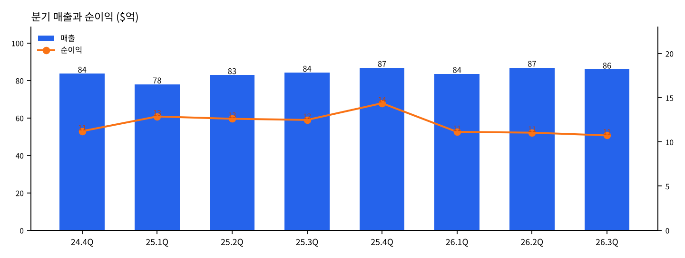
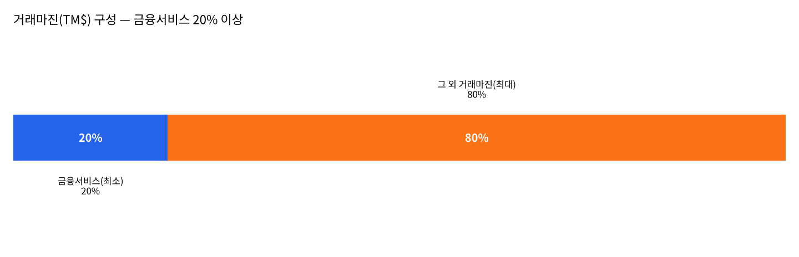
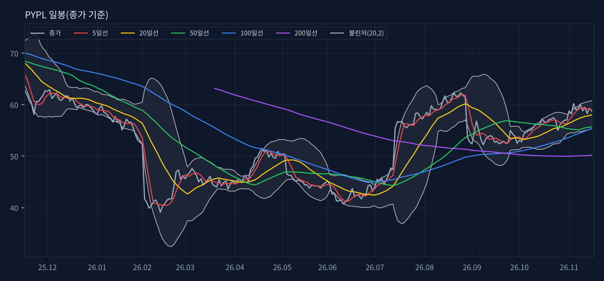
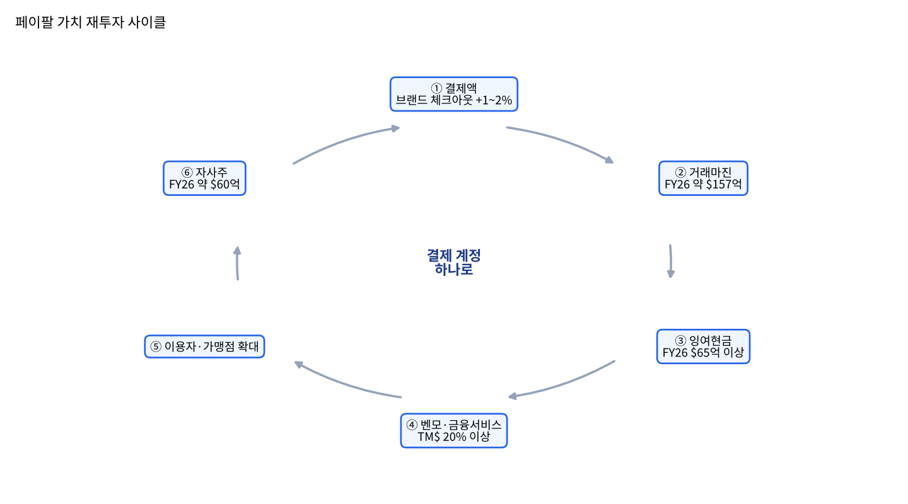

페이팔은 온라인 결제 지갑, 가맹점 결제(브랜드 체크아웃), 개인 간 송금 앱 벤모를 운영하는 결제회사다. 거래가 일어날 때마다 수수료에서 처리 비용을 뺀 거래마진(TM$)이 이익의 중심이며, 최근에는 대출·결제 계좌 같은 금융서비스(TM$의 20% 이상)를 키우고 있다.
| 항목 | 내용 |
|---|---|
| 종목 | PayPal Holdings, Inc. (PYPL) · NASDAQ · 본사 캘리포니아 산호세 |
| 밸류에이션 | PER 11.2배 · P/S 1.48배 (2026.11.16 종가 $58.83) |
| 최근 분기(26.3Q) | 매출 $86억, 영업이익 $14.0억, 순이익 $10.7억, GAAP EPS $1.25, 비GAAP EPS $1.45 |
| 현금·부채 | 현금 $100억, 부채 $140억, 잉여현금 TTM $63억(트레이딩뷰) |
| 사업 | 브랜드 체크아웃, 벤모, 결제 처리, 금융서비스 |
| 직책 | 인물 | 역할·특징 |
|---|---|---|
| CEO | 엔리케 로레스 | 2026년 2월 알렉스 크리스 후임으로 취임 |
| CFO | 제이미 밀러 | 실적·가이던스 발표 담당 |
경영 스타일: 이익과 현금 우선으로 방향을 바꾸는 중. 성장률보다 거래마진 달러와 잉여현금을 지표로 삼고, 현금의 큰 부분(FY26 약 $60억)을 자사주 매입에 쓴다. 2026년 7월 스트라이프의 인수 시도가 보도됐으나(보도 기준, 확인 필요) 회사 확정 계획은 이 양식에서 확인되지 않았다.
수억 명 규모의 계정과 가맹점 연결망에서 나오는 거래 데이터. 벤모와 금융서비스로 지갑 이용을 늘리려는 시도를 이어 간다.
단순 결제 수수료 회사에서 대출·계좌·벤모 수익이 늘어나는 구조로 이동. 금융서비스가 TM$의 20% 이상이다.
다음 실적발표는 세 가지 질문에 답하는 자리다.
1. 브랜드 체크아웃 결제액이 +1~2% 둔화에서 벗어나나?
2. 벤모·금융서비스가 거래마진의 다음 엔진이 되나?
3. FY26 가이던스(비GAAP EPS 약 $5.60, 잉여현금 $65억 이상)가 지켜지나?
한 줄 판정 규칙: 첫 번째 질문(브랜드 체크아웃 성장률)이 가장 약한 고리다. 높아지면 가장 크게 풀린다.
일정: 다음 실적발표는 트레이딩뷰 추정 2027.02.09(회사 확정 일정은 확인 필요). FY27 가이던스는 확인되지 않음.
| 분기 | 매출 | 영업이익 | 순이익 | 영업현금흐름 | 설비투자 | EPS | 조정 EPS | 특이 사항 |
|---|---|---|---|---|---|---|---|---|
| 24.4Q | $84억* | $14억* | $11억* | $24억* | $2억* | $1.11 | $1.19 | |
| 25.1Q | $78억 | $15억 | $13억 | $12억 | $2억 | $1.29 | $1.33 | |
| 25.2Q | $83억 | $15억 | $13억 | $9억* | $2억* | $1.29 | $1.40 | |
| 25.3Q | $84억 | $15억 | $12억 | $20억* | $3억* | $1.30 | $1.34 | |
| 25.4Q | $87억* | $15억* | $14억* | $24억* | $2억* | $1.53 | $1.23 | 순이익 8분기 최고(원인 확인 필요) |
| 26.1Q | $84억 | $15억 | $11억 | $11억 | $2억 | $1.21 | $1.34 | |
| 26.2Q | $87억 | $14억 | $11억 | $20억* | $2억* | $1.25 | $1.38 | |
| 26.3Q | $86억 | $14억 | $11억 | $16억* | $2억* | $1.25 | $1.45 | 거래마진 +2%, 조정 FCF $20억 |
EPS는 희석 GAAP 주당순이익, 조정 EPS는 트레이딩뷰 Reported(비GAAP) 기준이다. *는 연간 − 1~3분기 합 또는 누적 차이로 구한 근사치다.

흐름 요약: 매출은 8개 분기 동안 $78억~$87억 사이에서 제자리 걸음에 가깝다(24.4Q $84억 → 26.3Q $86억). 영업이익은 $14~15억대, 비GAAP EPS는 $1.19에서 $1.45로 꾸준히 늘었다. 이익 증가는 거래마진 개선과 자사주 매입(주식 수 감소)에서 나온다.
| 구분 | 돈을 버는 방식 | 비중 | 비고 |
|---|---|---|---|
| 금융서비스 | 대출·계좌·페이팔 크레딧 등 | TM$의 20% 이상 | 회사 발표 기준 |
| 그 외 거래마진 | 브랜드 체크아웃, 벤모, 결제 처리 | TM$의 80% 이하 | 차액 계산 |

부문별 매출 금액은 이 양식에서 확인되지 않아 TM$ 비중만 적었다. 금융서비스가 20% 이상이라는 점과 벤모 결제액이 두 자릿수로 늘고 있다는 점이 확인된 구성이다.
페이팔의 목적은 "결제 계정 하나로 지불·송금·금융을 모두 쓰게 하는 것"이다.
| 축 | 내용 |
|---|---|
| 브랜드 체크아웃 방어 | 가맹점 결제 점유율 유지 |
| 벤모 수익화 | 두 자릿수 결제액 성장을 수익으로 연결 |
| 금융서비스 확대 | TM$의 20% 이상, 더 키움 |
| 현금 환원 | FY26 자사주 약 $60억 |
| 비용 효율 | 영업이익률 약 16%대 유지 |

| 이동평균 | 값 | 종가 대비 | 위치 |
|---|---|---|---|
| 5일선 | $58.94 | -0.2% | 종가 아래 |
| 20일선 | $58.03 | +1.4% | 종가 위 |
| 50일선 | $55.69 | +5.6% | 종가 위 |
| 100일선 | $55.36 | +6.3% | 종가 위 |
| 200일선 | $50.18 | +17.2% | 종가 위 |
52주 저가 $38.5에서 올라와 최근 $51~61 범위에 있다. 종가 $58.83은 5·20·50일선이 모여 있는 $55.7~58.9 부근이며 200일선($50.2)보다 17% 위다.
| 규칙 | 기준 | 현재 값 | 신호 |
|---|---|---|---|
| 장기 추세 필터 | 종가 vs 200일선 | $58.80 > $50.18 | 매수 |
| 중장기 교차 | 50일선 vs 200일선 | $55.69 > $50.18 | 매수 |
| 단기 교차 | 20일선 vs 50일선 | $58.03 > $55.69 | 매수 |
| 돈키언 채널 | 55일 고가 $60.90 / 저가 $50.80 | 중간값 $55.85 위 | 매수 |
| 1개월 모멘텀 | 21거래일 수익률 | +3.8% (기준 $56.70) | 매수 |
| 3개월 모멘텀 | 63거래일 수익률 | -2.6% (기준 $60.40) | 매도 |
| 6개월 모멘텀 | 126거래일 수익률 | +32.5% (기준 $44.40) | 매수 |
| 12개월 모멘텀 | 252거래일 수익률 | -9.9% (기준 $65.30) | 매도 |
| 종합 (8개 평균) | +0.50 | 매수 우위 |
해석: 매수 신호 6개(장기 추세 필터, 중장기 교차, 단기 교차, 돈키언 채널, 1개월 모멘텀, 6개월 모멘텀), 매도 신호 2개(3개월 모멘텀, 12개월 모멘텀). 합계 +0.50이다. 14일 ATR $1.60 (2.7%), 52주 고가 $64.70 · 저가 $38.50.
| 가격 | 기준 | 무엇이 바뀌나 |
|---|---|---|
| $65.30 | 12개월 모멘텀 기준가 | 종가가 이 가격 위면 12개월 신호 매수 |
| $60.90 | 55일 고가 | 돌파 시 채널 상단 갱신 |
| $60.40 | 3개월 모멘텀 기준가 | 종가가 이 가격 위면 3개월 신호 매수 |
| $56.70 | 1개월 모멘텀 기준가 | 종가가 이 가격 위면 1개월 신호 매수 |
| $55.85 | 돈키언 중간값 | 55일 채널 중간값 위/아래로 신호가 바뀜 |
| $50.80 | 55일 저가 | 이탈 시 채널 하단 갱신 |
| $50.18 | 200일선 | 종가가 이 선 위/아래인지로 장기 추세 신호가 바뀜 |
| $44.40 | 6개월 모멘텀 기준가 | 종가가 이 가격 위면 6개월 신호 매수 |
가격 수준은 신호가 바뀌는 기준선일 뿐 진입·청산 가격 제안이 아니다. 20일/50일 교차는 이동평균 자체가 움직여 단일 가격으로 표시하지 않았다. 일봉·주봉은 종가 기준 직접 계산(고저 데이터 미사용)이다.
| 악재 요인 | 내용 | 강도 |
|---|---|---|
| 결제액 성장 둔화 | 브랜드 체크아웃 4분기 전망 +1~2%, TM$ +2% | 높음 |
| 경쟁 | 결제 앱·간편결제·핀테크 경쟁(구체 점유율은 확인 필요) | 중간 |
| 경영진·지배 변화 | 2026년 2월 CEO 교체, 7월 스트라이프 인수 시도 보도(확인 필요) | 참고 |
| 이익 구성 | 조정 EPS 증가의 상당 부분이 자사주 매입 효과 | 중간 |
| 티커 | 회사 | PER(TTM) | PEG | P/S | EPS 성장(YoY) |
|---|---|---|---|---|---|
| PYPL | 페이팔 | 11.2배 | 2.19 | 1.48배 | +5% |
| AFRM | 어펌 | 10.9배 | 0.02 | 5.37배 | +753% |
| XYZ | 블록 | 112.3배 | – | 2.03배 | -85% |
| GPN | 글로벌 페이먼츠 | 106.9배 | – | 2.12배 | -88% |
| V | 비자 | 34.9배 | 1.66 | 17.46배 | +21% |
| MA | 마스터카드 | 34.6배 | 1.55 | 15.95배 | +22% |
비교 결론: PYPL의 PER 11.2배는 V·MA(약 35배)보다 훨씬 낮고, 블록·글로벌 페이먼츠(100배 이상)는 GAAP EPS가 크게 줄어 의미가 없다. P/S 1.48배는 블록(2.03배)·글로벌 페이먼츠(2.12배)보다 낮다. 낮은 PER은 낮은 성장(+5%)을 반영한다.
PYPL은 적자 기업이 아니다(최근 4분기 순이익 $47억). 현금과 부채, 잉여현금으로 자본력을 본다.
| 지표 | 값 | 의미 |
|---|---|---|
| 현금 | $100억 | 트레이딩뷰 |
| 부채 | $140억 | 순부채 약 $40억(내 계산) |
| 잉여현금(FCF) TTM | $63억 | OCF $71억 − 설비투자 $8억 (SEC 합계 기준 약 $63억) |
| FY26 자사주 계획 | 약 $60억 | FCF의 대부분을 환원 |
| EBITDA (트레이딩뷰) | $75억 | TTM |
| 기준 | 매출 | P/S | 비고 |
|---|---|---|---|
| 트레이딩뷰 | – | 1.48배 | 매출 기준 |
| 결제·핀테크(AFRM·XYZ·GPN) | – | 약 3.17배 | 5.37 / 2.03 / 2.12 |
| 결제망(V·MA) | – | 약 16.7배 | 17.46 / 15.95 |
해석: PYPL의 P/S는 핀테크 피어의 절반 이하이고 결제망 회사의 1/10 수준이다. 이는 성장이 낮은 점과 매출에 처리 비용 성격이 큰 항목이 섞여 있는 점을 반영한다.
결제회사라 EBITDA를 그대로 쓸 수 있다. 영업이익과 EBITDA, 잉여현금을 함께 본다.
| 지표 | 값 | 산출 |
|---|---|---|
| EBITDA (TTM) | $75억 — 흑자 | 트레이딩뷰 |
| 영업이익 (TTM) | $58억 | SEC 25.4Q~26.3Q 합 |
| 순이익 (TTM) | $47억 | SEC 합계 |
| 영업현금흐름 (TTM) | $71억 | SEC 합계 |
| 설비투자 (TTM) | $8억 | SEC 합계 |
| 방식 | PER | EPS 성장률 | PEG | 판정 |
|---|---|---|---|---|
| 트레이딩뷰 (GAAP TTM $5.24) | 11.2배 | +5.2% | 2.19 | 기준 초과 |
| 비GAAP 기준 (TTM $5.40, 직전 $5.26, 참고) | 10.9배 | +2.7% | 약 4.1 | 기준 초과 |
판정: 트레이딩뷰 PEG 2.19 → 기준 초과. 비GAAP EPS TTM $5.40은 직전 4분기 $5.26보다 2.7% 늘어 PEG가 약 4.1로 더 높다(참고값). FY26 비GAAP EPS 가이던스 약 $5.60을 쓰면 선행 PER은 약 10.5배다(내 계산).

페이팔 사이클은 결제액 → 거래마진 → 잉여현금 → 서비스 재투자 → 이용자 확대로 돈다.
| 고리 | 현재 숫자 | 고리 강도 | 약해지는 신호 |
|---|---|---|---|
| ① 결제액 | 브랜드 체크아웃 +1~2% | 약함 | 성장률 정체 |
| ② 거래마진 | TM$ +2%, FY26 약 $157억 | 진행 중 | 마진 압박 |
| ③ 잉여현금 | FCF TTM $63억, FY26 $65억 이상 | 강함 | 현금흐름 둔화 |
| ④ 벤모·금융서비스 재투자 | 벤모 두 자릿수 성장, 금융서비스 20% 이상 | 강함 | 증가율 둔화 |
| ⑤ 이용자·가맹점 확대 | 계정·가맹점 기반 | 진행 중 | 점유율 하락 |
| ⑥ 자사주 | FY26 약 $60억 | 강함 | 현금 감소 |
사이클의 특징: 가장 약한 고리는 ①이다. 결제액이 늘지 않으면 ②~⑤ 재투자의 원천이 줄어든다.